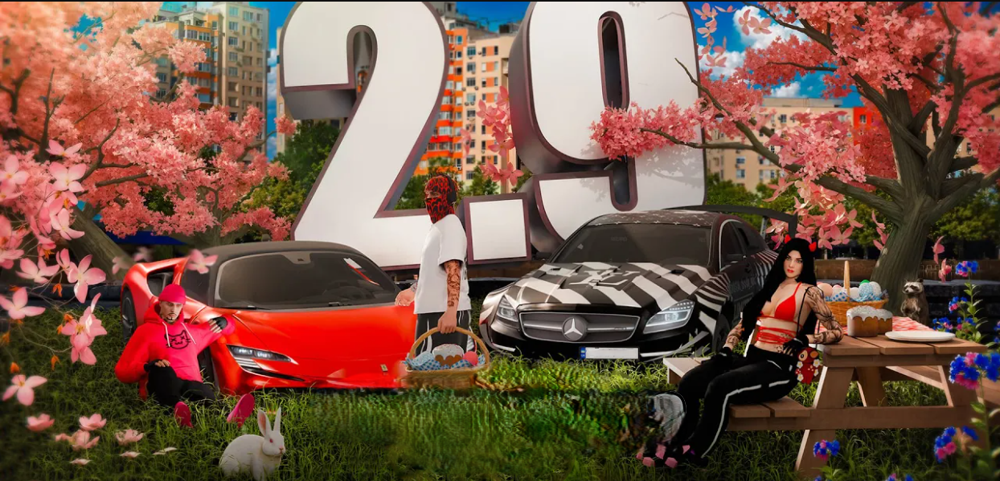
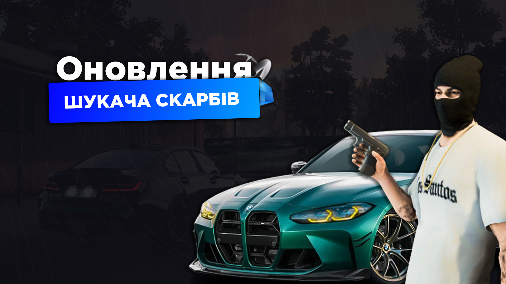
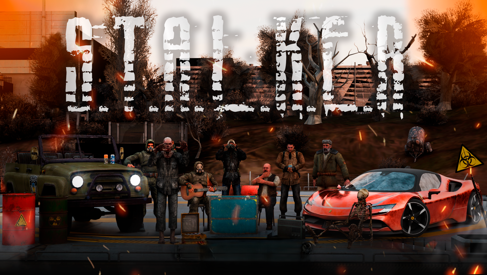
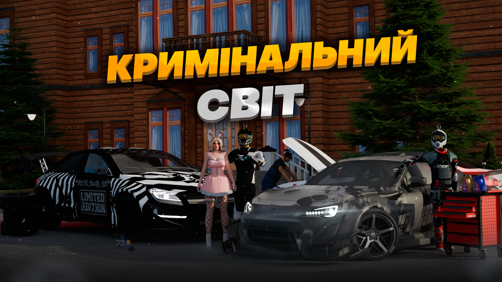

ВЕЛИКОДНІЙ ФАРМ
Перед великим святом Великодня ми вирішили порадувати вас оновленням 2.9, у якому на вас чекають: святковий івент, неймовірні автівки, найкрутіші скіни та справжня майнінг ферма. Усе це ви побачите вже зовсім скоро у грі!
18.04.2025

ШУКАЧ СКАРБІВ
Оновленні локації!
Можливо знайти як щось дорогоцінне,так і заборонене!
Ми обновили всі скарби,аби кожен міг заробити непогано:
Тому не зволікай, та гайда шукати щось дорогоцінне
10.04.2025

ЗОНА ВІДЧУЖЕННЯ
Доповнення нашої неймовірної Зони Відчуження — вже зовсім скоро!
Ми готуємо для вас нове оновлення, яке зробить перебування у Зоні ще більш захоплюючим і непередбачуваним.
Нові механіки, — усе для того, аби ваш геймплей став ще цікавішим, а атмосфера ще більш загадковою та напруженою.
Залишайся напоготові — Зона не пробачає помилок…
07.04.2025

КРИМІНАЛЬНИЙ СВІТ
Чекали на другу частину оновлення? Тоді приготуйтесь до оновлення, потужнометр якого зашкалює. Довгоочікувані гаражні місця у кланах, безмежна кількість нововведень та цікавих систем.
24.03.2025